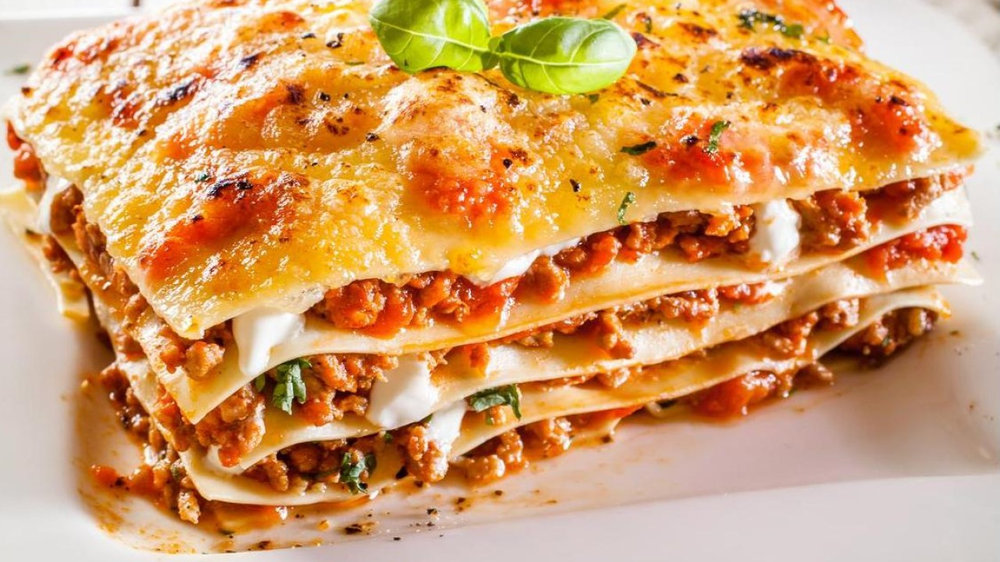

Lasagna
An instant Italian classic
Universally known, this recipe needs some time and prep, but we promise you it's worth it.

This recipe calls for ingredients, time and lots of love. But the taste of this baked pasta recipe is simply too good to not do it! Let's get right to it!
- Meat: we recommend lean ground beef
- Onion and garlic: An onion and two cloves of garlic are cooked with the meat to add tons of flavor.
- Tomato sauce: You'll need a can of crushed tomatoes, two cans of tomato sauce, and two cans of tomato paste.
- Lasagna noodles: Use store-bought or homemade lasagna noodles.
- Sugar: Put a couple of spoonfuls of sugar into your recipe to lower the tomato's acidity.
- CHEESE: The one you can't forget. Use the cheese you like best to add a crunchy touch to the recipe.
Have you got everything ready? Let's jump right into it.
- Make the meat sauce.
- Cook the noodles.
- Make the ricotta mixture.
- Layer the lasagna according to the recipe instructions.
- Cover with foil and bake.
- Let the lasagna rest before serving.